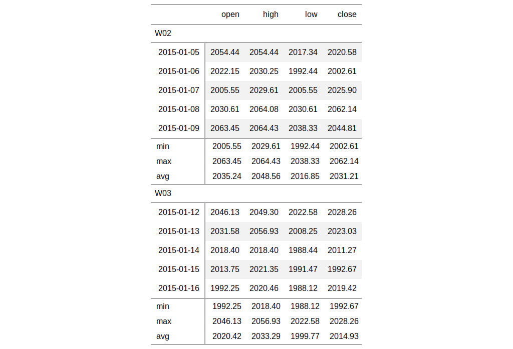

Add summary rows to one or more row groups by using the input data already
provided in the gt() function alongside any suitable
aggregation functions. Should we need to obtain the summary data for external
purposes, the extract_summary() can be used with a
gt_tbl object where summary rows were added via summary_rows().
summary_rows(data, groups = NULL, columns = NULL, fns, missing_text = "---", formatter = fmt_number, ...)
| data | a table object that is created using the |
|---|---|
| groups | the row groups labels that identify which summary rows will be added. |
| columns | the columns for which the summaries should be calculated. If nothing is provided, then the supplied aggregation functions will be applied to all columns. |
| fns | functions used for aggregations. This can include base functions
like |
| missing_text | the text to be used in place of |
| formatter | a formatter function name. These can be any of the
|
| ... | values passed to the |
an object of class gt_tbl.

# Use `sp500` to create a gt table with # row groups; create summary rows (`min`, # `max`, `avg`) by row group, where each # each row group is a week number tab_1 <- sp500 %>% dplyr::filter( date >= "2015-01-05" & date <="2015-01-16" ) %>% dplyr::arrange(date) %>% dplyr::mutate( week = paste0( "W", strftime(date, format = "%V")) ) %>% dplyr::select(-adj_close, -volume) %>% gt( rowname_col = "date", groupname_col = "week" ) %>% summary_rows( groups = TRUE, columns = vars(open, high, low, close), fns = list( min = ~min(.), max = ~max(.), avg = ~mean(.)), formatter = fmt_number, use_seps = FALSE )